Truth values, comparisons, and explicit conversions
Gregory S. DeLozier, PhD
New keywords: true, false,
boolean, type
Rename earlier variables that use those exact names.
true_value, boolean_value, and
typewriter remain identifiers.
__input = "21";
answer = number(input()) * 2;
large_enough = answer >= 40;
print(large_enough);trueready = true;Vertex spelling: true. Python value:
True.
| Expression | Result |
|---|---|
42 == 42.0 |
true |
"dog" != "cat" |
true |
-1.5 < .5 |
true |
2 <= 2 |
true |
2 > 3 |
false |
3 >= 3 |
true |
| Expression | Result |
|---|---|
true == 1 |
false |
"1" == 1 |
false |
"a" < "b" |
Type error |
true + 1 |
Type error |
number(true) + 2 |
3 |
| Expression | Value |
|---|---|
number(true) |
1 |
string(false) |
"false" |
boolean(-2) |
true |
boolean(0) |
false |
boolean(" FALSE ") |
false |
boolean("false") false
boolean("1") value error
boolean(number("1")) trueNo nonempty-string truthiness.
| Expression | Result |
|---|---|
type(42) |
"number" |
type(.5) |
"number" |
type("42") |
"string" |
type(1 < 2) |
"boolean" |
type(input()) still reads input.
1 + 2 * 3 < 8

expression ::= comparison
comparison ::= arithmetic_expression
[ compare_op arithmetic_expression ]| Expression | Result |
|---|---|
1 < 2 < 3 |
Syntax error |
(1 < 2) == true |
true |
(1 < 2) < 3 |
Type error |
All six comparisons. Exact result types. Conversion boundaries.
Input arguments run once; comparison operands run left to right.
true == 1
number(true) == 1
boolean("0")
boolean(number("0"))Which succeed, and what does each produce?